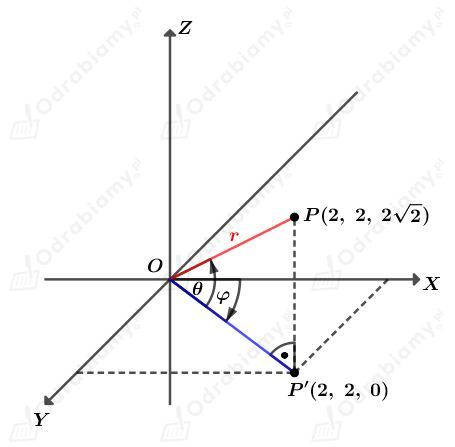
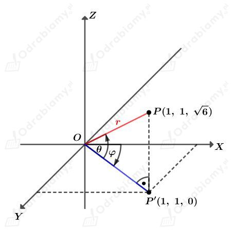

. Mamy:
. Mamy: a)
Dana jest kula opisana nierównością
Nierówność ta opisuje kulę o środku (0, 0, 0) i promieniu długości 3.
Wyznaczmy pole powierzchni tej kuli. Mamy:
Wyznaczmy objętość tej kuli. Mamy:
b)
Dana jest kula opisana nierównością
Nierówność ta opisuje kulę o środku (0, 0, 0) i promieniu długości √3.
Wyznaczmy pole powierzchni tej kuli. Mamy:
Wyznaczmy objętość tej kuli. Mamy:
c)
Dana jest kula opisana nierównością
Nierówność ta opisuje kulę o środku (0, 0, 0) i promieniu długości √10.
Wyznaczmy pole powierzchni tej kuli. Mamy:
Wyznaczmy objętość tej kuli. Mamy:
Dana jest kula o środku w punkcie (0, 0, 0) i promieniu długości r.
a)
Średnica tej kuli ma długość 8, czyli r=4.
Zapiszmy nierówność opisującą podaną kulę. Mamy:
czyli
b)
Objętość tej kuli jest równa 972𝜋. Mamy stąd:
Zapiszmy nierówność opisującą podaną kulę. Mamy:
czyli
Dany jest punkt
Położenie tego punktu zapiszemy za pomocą współrzędnych sferycznych.
Rysunek:

Liczba r jest długością odcinka OP. Mamy:
Wyznaczmy długość odcinka OP'. Mamy:
Wyznaczmy cosinus kąta . Mamy:
Zatem
Zauważmy, że w przestrzeni OXY punkt P'(2, 2) leży na prostej określonej równaniem y=x, która jest nachylona do osi OX pod kątem 45o, czyli
Więc uzasadnimy, że współrzędne sferyczne punktu P są równe:
co kończy dowód.
Dany jest punkt
Położenie tego punktu zapiszemy za pomocą współrzędnych sferycznych.
Rysunek:

Liczba r jest długością odcinka OP. Mamy:
Wyznaczmy długość odcinka OP'. Mamy:
Wyznaczmy cosinus kąta  . Mamy:
. Mamy:
Zatem
Zauważmy, że w przestrzeni OXY punkt P'(1, 1) leży na prostej określonej równaniem y=x, która jest nachylona do osi OX pod kątem 45o, czyli
Więc uzasadnimy, że współrzędne sferyczne punktu P są równe:
co kończy dowód.